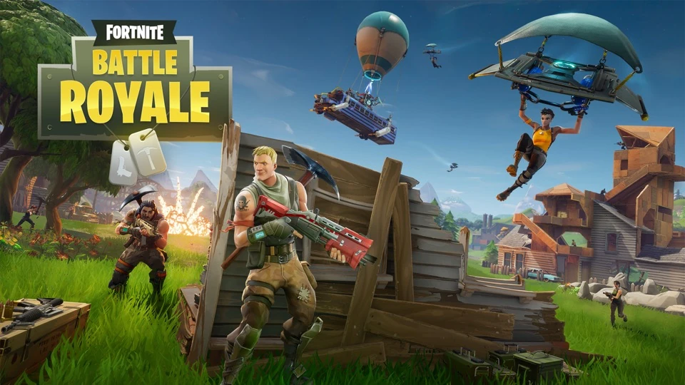

Capítulos Fortnite
| CAPÍTULOS | TEMPORADAS | FECHA | TEMÁTICA |
|---|---|---|---|
|  | Temporada 01 | Del 25 de octubre al 13 de diciembre de 2017 | Aún no había |
| Temporada 02 | Del 14 de diciembre al 21 de febrero de 2018 | Medieval | |
| Temporada 03 | Del 22 de febrero al 30 de abril de 2018 | Exploración Espacial | |
| Temporada 04 | Del 1 de mayo al 11 de julio de 2018 | Super héroes y películas | |
| Temporada 05 | Del 12 de julio al 26 de septiembre de 2018 | Choque de mundos | |
| Temporada 06 | Del 27 de septiembre al 5 de diciembre de 2018 | Oscuridad | |
| Temporada 07 | Del 6 de diciembre al 28 de febrero de 2019 | Invierno | |
| Temporada 08 | Del 28 de febrero al 8 de mayo de 2019 | Piratas/Aventuras | |
| Temporada 09 | Del 9 de mayo al 1 de agosto de 2019 | Futuro | |
| Temporada 10 | Del 1 de agosto al 13 de octubre de 2019 | Viajes en el tiempo | |
 |
Temporada 01 | Del 14 de octubre al 16 de junio de 2020 | Midas |
| Temporada 02 | Del 20 de febrero al 17 de junio de 2020 | Espías | |
| Temporada 03 | Del 17 de junio al 27 de agosto de 2020 | La gruta | |
| Temporada 04 | Del 27 de agosto al 1 de Diciembre de 2020 | Guerra en el Nexus | |
| Temporada 05 | Del 2 de diciembre al 16 de marzo de 2021 | Instintos | |
| Temporada 06 | Del 16 de marzo al 8 de junio de 2021 | Instintos | |
| Temporada 07 | Del 8 de Junio al 12 de Septiembre de 2021 | Aliens | |
| Temporada 08 | Del 17 de septiembre al 4 de diciembre de 2021 | Asaltos | |
| Temporada 01 | Del 5 de diciembre al 18 de marzo de 2022 | Construcciones | |
| Temporada 02 | Del 19 de marzo al 4 de junio de 2022 | Inundación | |
| Temporada 03 | Del 5 de junio al 17 de septiembre de 2022 | Pescar | |
| Temporada 04 | Del 18 de septiembre al 10 de febrero de 2023 | Nuevas Armas | |
| Temporada 01 | Del 11 de febrero al 20 de mayo de 2023 | Sombras | |
| Temporada 02 | Del 21 de mayo al 8 de junio de 2023 | Desierto | |
| Temporada 03 | Del 9 de junio al 25 de agosto de 2023 | Galactus | |
| Temporada 04 | Del al 26 de agosto al 2 de noviembre de 2023 | Cantantes | |
| Temporada 05 | Del 3 de noviembre al 5 de diciembre de 2023 | Orígenes (vuelta al capítulo 1) | |
| Temporada 01 | Del 6 de diciembre al 7 de marzo de 2024 | contra cultura | |
| Temporada 02 | PROXIMAMENTE (desde el 8 de marzo) | ---- |
La temporada "Orígenes" de Fortnite marcó un emocionante retorno al Capítulo 1 del juego, sumergiendo a los jugadores en una nostálgica ola de experiencias que recordaban los primeros días del fenómeno Fortnite. Con un viaje hacia el pasado, esta temporada se convirtió en un hito, destacando como una de las más jugadas y apreciadas en la historia reciente del juego. Desde su lanzamiento, la temporada "Orígenes" capturó el corazón de la comunidad de Fortnite de una manera única. Los jugadores encontraron un profundo sentido de conexión con los momentos emblemáticos, los lugares icónicos y las mecánicas de juego que una vez dominaron el paisaje del Capítulo 1. Esta oda a los orígenes del juego resonó con la base de fans, generando un fervor y una emoción palpable en toda la comunidad. La recepción abrumadoramente positiva que recibió la temporada "Orígenes" fue testimonio de su impacto duradero. La nostalgia se fusionó con la innovación, proporcionando a los jugadores una experiencia que equilibraba perfectamente lo familiar con lo nuevo. Este equilibrio hábilmente ejecutado no solo revitalizó el interés en Fortnite, sino que también consolidó su posición como un fenómeno cultural en constante evolución. La popularidad y el cariño que los jugadores tienen por la temporada "Orígenes" ha llevado a especulaciones sobre su posible retorno. La idea de revivir esta temporada emblemática ha estado circulando entre la comunidad, alimentando la esperanza de una segunda oportunidad para revivir esos momentos mágicos y revivir la gloria del Capítulo 1. En resumen, la temporada "Orígenes" no solo representó un regreso triunfante a los inicios de Fortnite, sino que también se ha establecido firmemente como un punto de referencia en la historia del juego. Su legado perdura en la memoria de los jugadores y su influencia sigue resonando en la comunidad. Con la posibilidad de un retorno en el horizonte, los fanáticos aguardan con expectación la oportunidad de sumergirse una vez más en la nostalgia y la emoción de la temporada "Orígenes" de Fortnite.